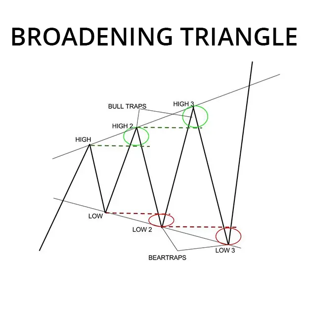
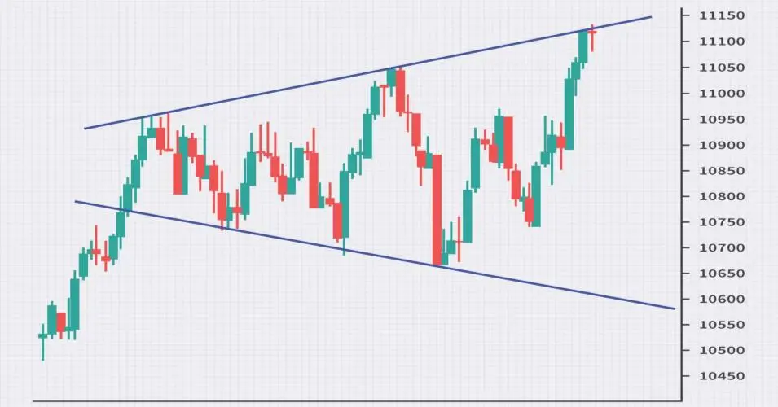

Un patrón de triángulo ampliado, también conocido como una formación de megáfonos o triángulos en expansión, es un patrón técnico del gráfico caracterizado por la volatilidad y la incertidumbre en el precio de una garantía. Se señala una posible breakout en ambas direcciones, lo que lo convierte en un indicador significativo para los comerciantes para vigilar.
Un patrón de triángulo ampliado, también conocido como una formación de megáfonos o triángulos en expansión, es un patrón técnico del gráfico caracterizado por la volatilidad y la incertidumbre en el precio de una garantía. Se señala una posible breakout en ambas direcciones, lo que lo convierte en un indicador significativo para los comerciantes para vigilar.
- Líneas de tendencia divergentes: A diferencia de otros patrones de triángulos en los que las líneas de tendencias convergen, las dos líneas en un triángulo ampliado divergen. Uno conecta los altos más altos, mientras que el otro conecta las bajas más bajas. Esto crea un efecto visual de un megáfono o fúnel en ampliación.
- Aumento de la volatilidad:
A medida que el precio fluctúa entre las divergentes líneas de tendencia, los movimientos de los precios se vuelven cada vez más volátiles. Esto significa una creciente incertidumbre entre los participantes en el mercado, con los compradores presionando por precios más elevados y los vendedores insistiendo por precios inferiores.
- Breakout: El eventual breakout ocurre cuando el precio se rompe decisivamente, ya sea por encima de la línea de tendencia superior o por debajo de la linea de la tendencia inferior. Una fuerte confirmación de volumen suele acompañar a la breakout para señalar su validez.

Aquí hay algunos puntos adicionales para recordar acerca de ampliar triángulos:
- Si bien la dirección de la breakout es incierta, la tendencia predominante antes de la formación del patrón puede ofrecer algunas pistas. Una breakout por encima de la línea de tendencia superior tiende a ser más probable dentro de una tendencia ascendente, mientras que una breakouts por debajo de la tendencia inferior es más probable en un tendencia descendente.
- Las brechas falsas son comunes dentro de triángulos ampliados debido a la alta volatilidad. Estos ocurren cuando el precio rompe brevemente a través de una de las líneas de tendencia pero luego rápidamente se vuelve dentro del patrón.
- Cuanto más ancho sea el triángulo ampliado, más significativo será el eventual rompimiento. Esto se debe a que los patrones más amplios indican una mayor indecisión y un aumento de la energía que espera ser liberada.
Ejemplo de gráfico en vivo:
